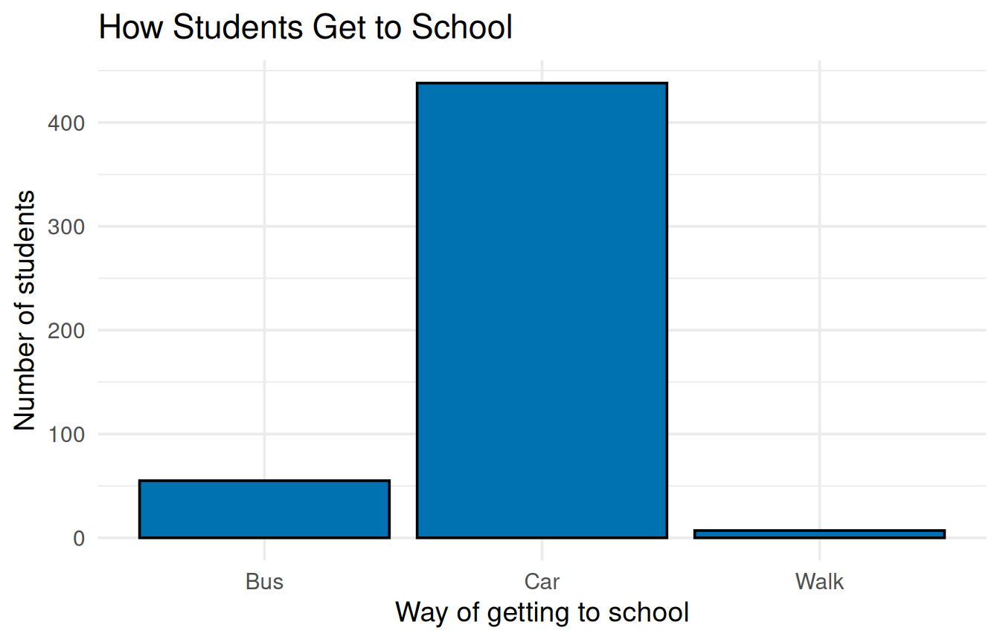
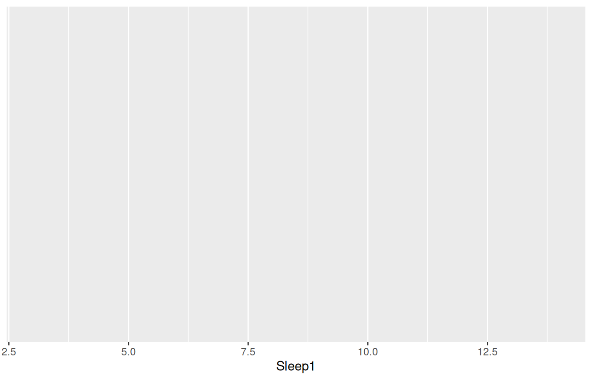
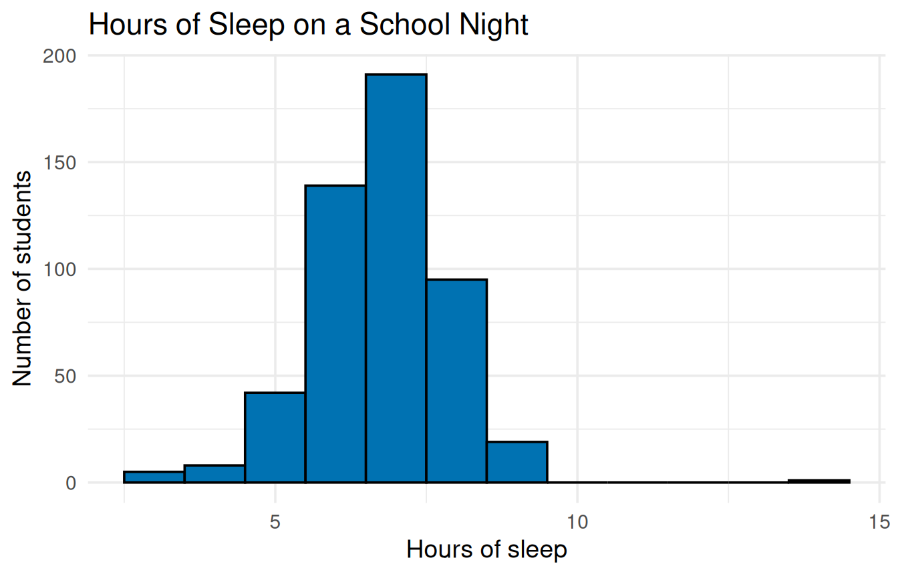
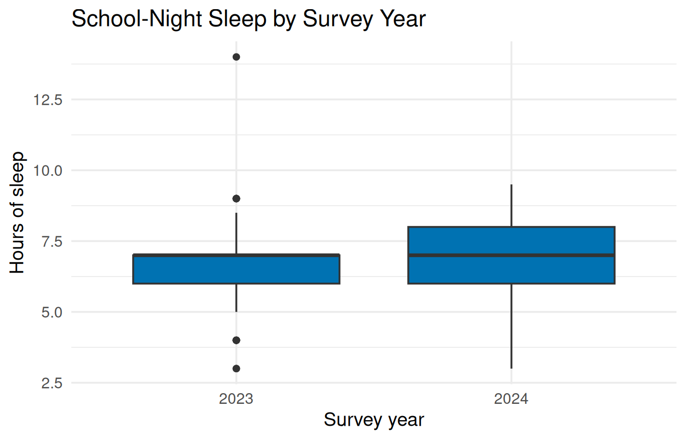
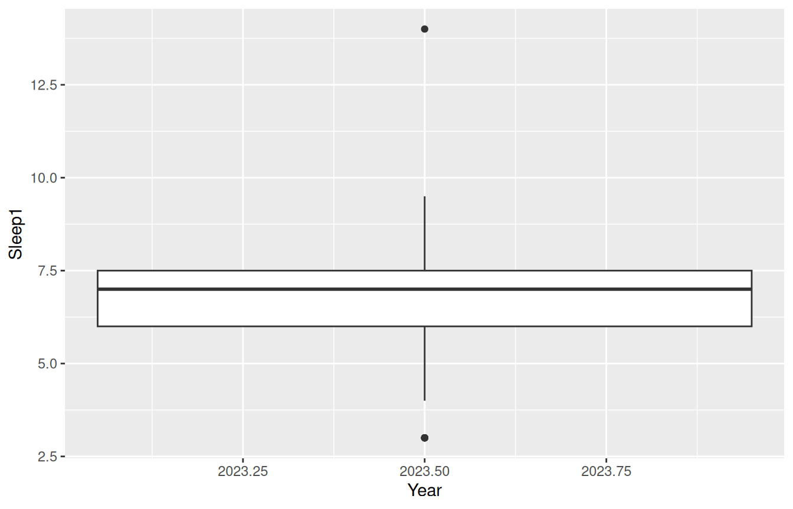
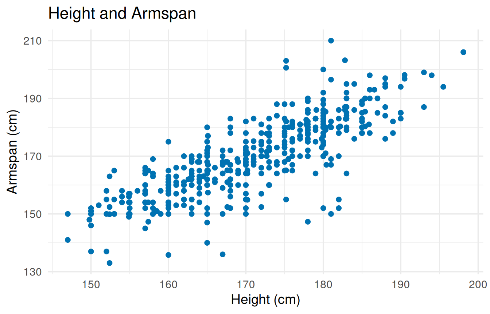
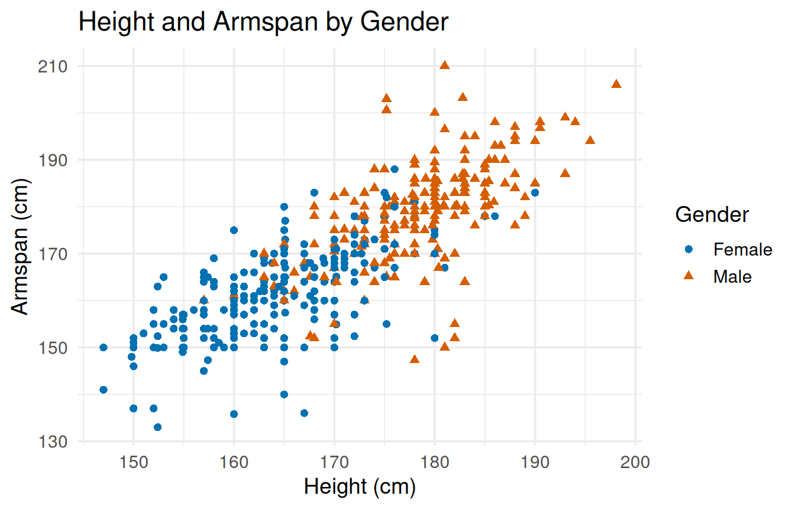

# Load ggplot2, the package that draws our graphs. You install it
# once (see Getting Set Up), but you load it every time you open
# RStudio.
library(ggplot2)1 Graphs and Summaries
In this chapter you will make five of the graphs from Chapter 1 of the textbook (a bar chart, a histogram, side-by-side box plots, and two scatterplots) and calculate a mean and a median.
Every graph in this chapter uses the same recipe, so once you have made the first one, the rest are small changes to it.
Get the script: Download the Chapter 1 script, chapter_01.R, and save it in the same folder as your data. It holds all of the code in this chapter, so you can run each piece as you read instead of typing it.
1.1 The data
The examples use census_at_school.csv, a sample of 500 high school seniors in Pennsylvania. Download census_at_school.csv into the same folder as the script. To use your own dataset, you will copy the steps here and change the marked lines.
The variables used in this chapter:
| Variable | Type | What it records |
|---|---|---|
GetToSchool |
Categorical | Main mode of transportation used to get to school (Bus, Car, or Walk, where Walk includes bicycles and skateboards). |
Sleep1 |
Numerical | The typical number of hours of sleep the student gets on a school night. |
TravelTime |
Numerical | The time it takes the student to travel to school, recorded in minutes. |
Armspan |
Numerical | The student’s armspan measured in centimeters. |
Height |
Numerical | The student’s height measured in centimeters. |
Year |
Categorical | The year the student submitted their data (2023 or 2024). |
Gender |
Categorical | The individual’s gender (Female or Male). |
1.2 Load the package and the data
Start every script the same way: load the packages, then read the data. If you have not installed ggplot2 yet, go back to Install and load packages in Getting Set Up.
# Read the CSV file and store it under the name "students".
# CHANGE THIS: the file name of your dataset, inside the quotes.
students <- read.csv("census_at_school.csv")
# List the variable names, so you can check that the data loaded
# and see exactly how each name is spelled.
names(students) [1] "Year" "Gender" "Age"
[4] "Hand" "Height" "Foot"
[7] "Armspan" "Languages" "GetToSchool"
[10] "TravelTime" "ReactionTime" "MemoryScore"
[13] "Activity" "Music" "BirthMonth"
[16] "Season" "Allergies" "Vegetarian"
[19] "FavFood" "FavDrink" "FavSubject"
[22] "Sleep1" "Sleep2" "Occupants"
[25] "Communicate" "TextsSent" "HangHours"
[28] "HWHours" "VideoGameHours" "ComputerHours"
[31] "TVHours" "WorkHours" "SchoolPressure"
[34] "Superpower" "Preference" The <- arrow stores the data under the name students. From now on, students means “the whole dataset.” The list of names is your spelling reference: R treats Sleep1 and sleep1 as two different things, so copy names exactly as they appear here.
TipWith your own data
Change the file name inside the quotes to your dataset’s file name, such as "student_lifestyle_sleep.csv". You can keep the name students, or choose a name that describes your data (if you do, change it everywhere it appears). Run names(students) again and keep the new list handy; the variable names in the graphs below will change to match it.
1.3 Picking out one variable with $
Many R commands work on one variable at a time. The $ sign picks one variable (one column) out of a dataset: students$TravelTime means “the TravelTime column of students.” Read it as “students, the TravelTime column.”
# The $ sign picks one variable (column) out of a dataset:
# students$TravelTime means "the TravelTime column of students".
# head() shows only the first six values, so the screen does not
# fill up with all 500.
head(students$TravelTime)[1] 5 15 4 9 8 7These are the travel times, in minutes, of the first six students in the dataset.
You will use $ with commands such as mean() and median(). Inside ggplot() you do not need it: you name the dataset once at the start, and ggplot() looks up each variable name in that dataset.
WarningCommon error: NULL
What you see
head(students$travelTime)NULLWhat it means: NULL means “nothing there.” R found no column called travelTime (with a lowercase “t”), so it has nothing to show. R does not stop with an error here, which makes this one easy to miss.
How to fix it: check the spelling after the $ against names(students).
1.4 Bar chart
A bar chart shows how many observations fall in each category of a categorical variable.
# 1. BAR CHART: one bar per category. The height of each bar is
# the number of students in that category.
# ggplot(students, ...) names the dataset to use.
# aes() says which variable goes where; x = puts it on the
# horizontal axis. (aes is short for "aesthetics".)
# geom_bar() draws the bars. fill = sets the color inside the
# bars, and color = sets the color of their outlines.
# labs() writes the title and the axis labels. Anything inside
# quotes is printed exactly as you type it.
# theme_minimal() gives the graph a plain background.
# base_size = 14 sets the text size, in points. You can leave
# it as is.
# CHANGE THIS: your categorical variable after x =
ggplot(students, aes(x = GetToSchool)) +
geom_bar(fill = "#0072B2", color = "black") +
# CHANGE THIS: your title and x-axis label, inside the quotes
labs(title = "How Students Get to School",
x = "Way of getting to school",
y = "Number of students") +
theme_minimal(base_size = 14)
Every graph in this companion is built from the same four parts, joined with + signs:
ggplot(students, aes(x = GetToSchool))names the data and the variable to plot.geom_bar()says what kind of graph to draw. Each graph type has its owngeom_(you will seegeom_histogram(),geom_boxplot(), andgeom_point()next).labs()writes the title and axis labels. Anything inside quotes is printed as you typed it.theme_minimal(base_size = 14)gives a plain background and readable text.
The settings inside the parentheses, such as fill = "#0072B2" and base_size = 14, are called arguments. The comments in the script explain each one, including the ones you can leave as they are.
NoteAbout the colors
Codes such as "#0072B2" (blue) and "#D55E00" (vermillion, a red-orange) come from the Okabe-Ito palette, the same colors the textbook uses. They were chosen so that people with color blindness can tell them apart. The top of the script lists more of them. You can also type a plain color name, such as "darkgreen".
WarningCommon error: object not found
What you see
ggplot(students, aes(x = gettoschool)) +
geom_bar()Error in `geom_bar()`:
! Problem while computing aesthetics.
ℹ Error occurred in the 1st layer.
Caused by error:
! object 'gettoschool' not foundWhat it means: R could not find a variable called gettoschool. The real name is GetToSchool, with capital letters.
How to fix it: copy the variable name exactly from the names(students) list, including capital letters, numbers, and underscores.
WarningCommon error: Cannot use
+ with a single argument
What you see
ggplot(students, aes(x = Sleep1))
+ geom_histogram()Error:
! Cannot use `+` with a single argument.
ℹ Did you accidentally put `+` on a new line?What it means: the + has to come at the end of a line. When a line ends without +, R thinks the command is finished, draws an empty graph, and then does not know what to do with the + on the next line.
How to fix it: move each + to the end of the line above it, as in the examples.
1.5 Histogram
A histogram shows the shape of a numerical variable. Use it to describe shape (Chapter 1 of the textbook covers skew and floor and ceiling effects).
# 2. HISTOGRAM: shows the shape of one numerical variable.
# binwidth = 1 makes each bar 1 unit wide, in the units of your
# variable (here, 1 hour of sleep).
# fill = and color = work the same way as in the bar chart.
# CHANGE THIS: your numerical variable after x =
ggplot(students, aes(x = Sleep1)) +
# CHANGE THIS: a binwidth that suits your variable
geom_histogram(binwidth = 1, fill = "#0072B2", color = "black") +
# CHANGE THIS: your title and x-axis label, inside the quotes
labs(title = "Hours of Sleep on a School Night",
x = "Hours of sleep",
y = "Number of students") +
theme_minimal(base_size = 14)
binwidth sets how wide each bar is, in the units of your variable. Here each bar covers 1 hour of sleep.
NoteMessage: Pick better value with binwidth
If you leave out binwidth, R picks 30 bars on its own and prints this message:
`stat_bin()` using `bins = 30`. Pick better value with `binwidth`.This is a message, not an error; the graph still draws. Adding binwidth removes the message and usually gives a clearer graph.
TipWith your own data
Change Sleep1 to your numerical variable, and update the title and x-axis label. Choose a binwidth in your variable’s units: 1 works for counts such as classes missed, but a GPA needs something smaller, such as 0.25. Try a few values and keep the one that shows the shape best. For a second variable, copy the whole block and change it again.
1.6 Mean and median
mean() and median() each take one variable, picked out with the $ sign.
# 3. MEAN AND MEDIAN of one numerical variable. Each one takes a
# single variable, picked out with the $ sign.
# CHANGE THIS: your variable after the $, in both lines
mean(students$TravelTime)[1] 11.324median(students$TravelTime)[1] 9The average travel time is about 11.3 minutes, and the median is 9 minutes. The number after [1] is the answer (the [1] only means “first value”).
WarningCommon error: the answer is NA
What you see
# Armspan has some empty cells, so mean() gives NA.
mean(students$Armspan)[1] NAWhat it means: NA stands for “not available.” Some students left Armspan blank, and R will not average a column with blanks in it unless you tell it to skip them.
How to fix it: add na.rm = TRUE (“NA remove”) inside the parentheses.
# na.rm = TRUE removes the empty cells before R calculates.
# (na.rm is short for "NA remove"; TRUE means yes.)
mean(students$Armspan, na.rm = TRUE)[1] 169.8084median(students$Armspan, na.rm = TRUE)[1] 169A misspelled variable name also gives NA, with a warning:
mean(students$sleep1)Warning in mean.default(students$sleep1): argument is not numeric
or logical: returning NA[1] NAIf you see this warning, check the spelling against names(students).
TipWith your own data
Change TravelTime to your variable in both lines. If either answer is NA, your variable has blank cells; add na.rm = TRUE as shown in the box above.
1.7 Side-by-side box plots
Side-by-side box plots compare a numerical variable across groups. This one compares school-night sleep for the two survey years.
# 4. SIDE-BY-SIDE BOX PLOTS: one box per group.
# Year is stored as a number (2023 or 2024). factor() tells R
# to treat it as group names, which gives one box per year.
# y = puts the numerical variable on the vertical axis.
# fill = sets the color inside the boxes.
# CHANGE THIS: your group variable inside factor(), and your
# numerical variable after y =
ggplot(students, aes(x = factor(Year), y = Sleep1)) +
geom_boxplot(fill = "#0072B2") +
# CHANGE THIS: your title and axis labels, inside the quotes
labs(title = "School-Night Sleep by Survey Year",
x = "Survey year",
y = "Hours of sleep") +
theme_minimal(base_size = 14)
Year is stored as a number, but it is a categorical variable: 2023 and 2024 are group names, not amounts. Wrapping it in factor() tells R to treat it as groups.
WarningCommon error: only one box appears
What you see
ggplot(students, aes(x = Year, y = Sleep1)) +
geom_boxplot()Warning: Orientation is not uniquely specified when both the x and y
aesthetics are continuous. Picking default orientation 'x'.Warning: Continuous x aesthetic
ℹ did you forget `aes(group = ...)`?
What it means: without factor(), R reads Year as an ordinary number and draws one box for everyone. The warning about aes(group = ...) is R’s hint that something is off.
How to fix it: wrap the group variable in factor(), as in aes(x = factor(Year), y = Sleep1).
TipWith your own data
Put your group variable inside factor() and your numerical variable after y =, then update the labels. If your groups are stored as numbers (for example, a class year coded 1 to 4), you need factor(). If they are stored as words, such as Bus and Car, factor() does no harm, so you can always keep it.
1.8 Scatterplot
A scatterplot shows how two numerical variables move together, with one dot per student.
# 5. SCATTERPLOT: one dot per student, showing how two numerical
# variables move together. The variable after x = goes on the
# horizontal axis; the variable after y = goes on the vertical
# axis.
# geom_point() draws the dots. color = sets their color.
# CHANGE THIS: your x variable and your y variable
ggplot(students, aes(x = Height, y = Armspan)) +
geom_point(color = "#0072B2") +
# CHANGE THIS: your title and axis labels, inside the quotes
labs(title = "Height and Armspan",
x = "Height (cm)",
y = "Armspan (cm)") +
theme_minimal(base_size = 14)Warning: Removed 34 rows containing missing values or values outside the
scale range (`geom_point()`).
The variable after x = goes on the horizontal axis, and the variable after y = goes on the vertical axis.
NoteWarning: Removed 34 rows containing missing values
R prints this warning because 34 students have a blank Armspan, so it has no place to put their dots. The graph is still correct; it just shows the 466 students with both measurements. With your own data, the number in the warning tells you how many rows were left out.
TipWith your own data
Change both variables and all three labels. Put the variable you think of as the explanation (the predictor) after x =, and the outcome after y =.
1.9 Scatterplot with groups
Adding a third variable takes two more words inside aes(). Here each gender gets its own color and its own shape, so the groups can be told apart in black and white or by readers who do not see color differences.
# 6. SCATTERPLOT WITH GROUPS: the same graph, with each group in
# its own color AND its own shape. The shapes let a reader tell
# the groups apart even in black and white.
# color = and shape = inside aes() name the group variable.
# scale_color_manual(values = ...) picks the colors, one per
# group, in alphabetical order of the group names (here,
# Female gets blue and Male gets vermillion). c() combines
# the colors into one list. With more groups, add more colors
# from the list at the top of this script.
# CHANGE THIS: your group variable, after color = and shape =
ggplot(students, aes(x = Height, y = Armspan,
color = Gender, shape = Gender)) +
geom_point() +
scale_color_manual(values = c("#0072B2", "#D55E00")) +
# CHANGE THIS: your labels; give color = and shape = the same
# legend title
labs(title = "Height and Armspan by Gender",
x = "Height (cm)",
y = "Armspan (cm)",
color = "Gender",
shape = "Gender") +
theme_minimal(base_size = 14)Warning: Removed 34 rows containing missing values or values outside the
scale range (`geom_point()`).
scale_color_manual() picks the colors, one for each group, in alphabetical order of the group names: Female gets the first color (blue), and Male gets the second (vermillion). With three groups, add a third color from the list at the top of the script.
The legend title comes from color = and shape = inside labs(). Give both the same title so R shows one legend instead of two.
1.10 Saving a graph
To put a graph in a paper or assignment, either click Export above the graph in the Plots pane and choose Save as Image, or run ggsave() right after the graph:
# SAVING A GRAPH: ggsave() saves the most recent graph as a picture
# in your working directory.
# width = 7 and height = 4.5 set the size of the picture, in
# inches (7 inches is about the width of a printed page). Change
# them only if you want a bigger or smaller picture.
# CHANGE THIS: a file name for your graph, ending in .png
ggsave("my_graph.png", width = 7, height = 4.5)width = 7 and height = 4.5 set the size of the picture in inches; 7 inches is about the width of a printed page. The file appears in your working directory (the same folder as your script), where you can attach it to your assignment.